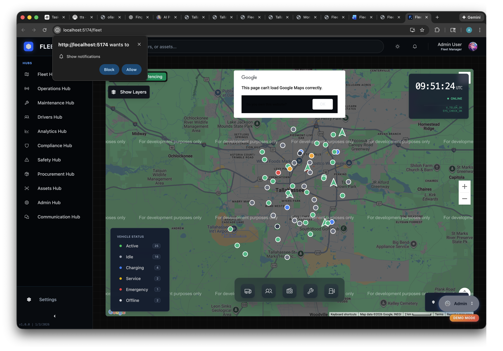
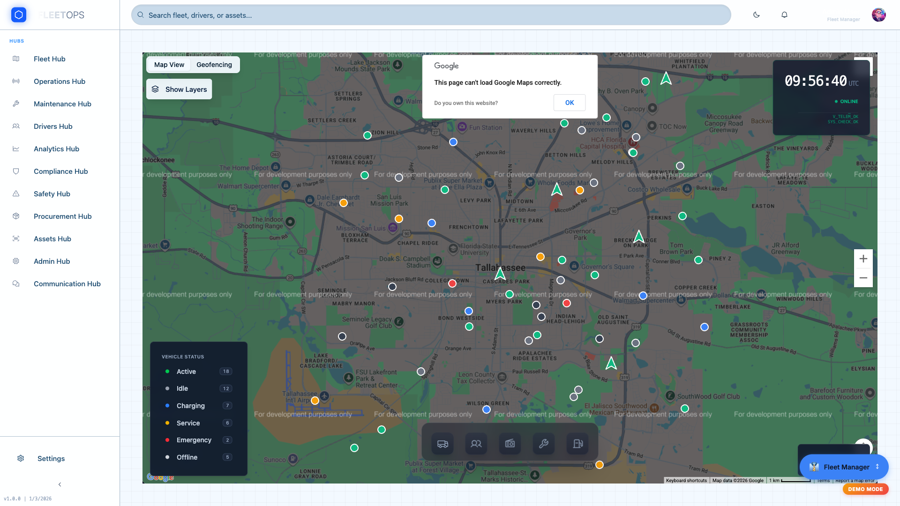
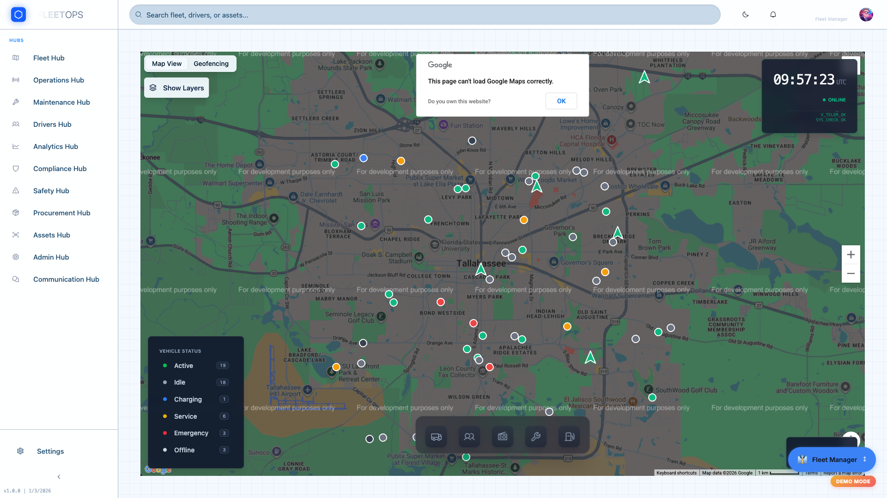

Meeting Overview
Meeting Objective
Goal: Share the platform, gain trust and confidence, gather requirements, and leave with a commitment to next steps (NOT close the sale on day 1).
Approach: Listen 70% of the time, talk 30%. Focus on THEIR problems, not just our features.
60-Minute Meeting Structure
0:00 - 0:05
Introduction & Discovery
Build rapport, ask discovery questions, understand pain points
0:05 - 0:10
Company Overview
Capital Technology Alliance background, why we built this, our mission
0:10 - 0:17
Fleet Hub Demo
Real-time tracking, 3D Virtual Garage, telemetry data
0:17 - 0:22
Operations Hub Demo
Dispatch console, route optimization, task management
0:22 - 0:28
Maintenance Hub Demo
Predictive maintenance AI, work orders, shop management
0:28 - 0:32
Compliance Hub Demo
DOT, IFTA, OSHA automation and reporting
0:32 - 0:40
Safety & Additional Hubs
Safety incidents, video telematics, procurement, drivers
0:40 - 1:00
Q&A and Next Steps
Answer questions, gather requirements, propose follow-up meetings
Critical Reminders
- LISTEN more than talk - They tell you how to win
- Be HONEST - Only mention features that actually exist
- Focus on THEIR problems - Not just showcasing features
- This is relationship-building - Not closing
- Show respect - They're #1 in the nation, not a typical prospect
"Thank you for meeting with me. Before I show you the platform, I'd love to learn about your current situation. What are your top 3 challenges with fleet management right now?"
Setup & Introductions (First 2 minutes)
📝 Physical Setup
Literally just shake hands, get laptop connected, etc.
- Shake hands, introductions (if first time meeting)
- Connect laptop to their display/projector
- Ensure WiFi/internet connection stable
- Open browser to http://localhost:5174/fleet (have app running already)
- Have speaking script open on second monitor or printed
- Silence phone notifications
Small talk while setting up: "How's your day going?" "Thank you for taking the time to meet." "I'm excited to show you what we've built."
Critical Discovery Questions
"What are your top 3 challenges with fleet management right now?"
📝 What to Listen For
If they mention MAINTENANCE: Emphasize predictive maintenance ($337K annual savings)
If they mention COSTS: Emphasize 20-40% savings vs. Samsara ($180K-$480K/year)
If they mention COMPLIANCE: Emphasize DOT/IFTA/OSHA automation (60 hours → 2 hours quarterly)
If they mention VISIBILITY: Emphasize real-time GPS tracking and dashboards
If they mention DATA/REPORTING: Emphasize AI chat assistant and automated reporting
"What's working well with your current system that we need to make sure we preserve?"
📝 Purpose
Identifies features they love - don't promise to replace these unnecessarily. Instead, show how we integrate or enhance them.
Example: If they love their Samsara GPS hardware, emphasize that we can integrate via Samsara API (keep their investment).
"If you could wave a magic wand and fix ONE thing about your fleet operations, what would it be?"
📝 Why This Works
This question often reveals a different answer than question #1. It forces them to prioritize and reveals what REALLY keeps them up at night.
Your response: "That's exactly the kind of problem we're designed to solve. Let me show you how..."
Critical: Take Detailed Notes
Write down their exact words. Use their language when presenting ("You mentioned you struggle with X, here's how we solve that...").
These answers will shape your entire demo, your proposal, and your pricing strategy.
⏱️ Keep This Brief
You have 5 minutes max for company overview. Don't oversell. Build credibility, then get to the demo.
They care more about THEIR problems than YOUR company history. Touch on these points quickly and move on.
Who We Are - Capital Technology Alliance
📝 Exact Words to Say
"Let me briefly tell you about us, then I'll dive into the demo."
Capital Technology Alliance is a software development company founded in 2024. We specialize in building cloud-based management platforms for government and enterprise organizations.
Our team has experience in:
- Fleet management and logistics (20+ years combined)
- Government compliance (DOT, OSHA, IFTA regulations)
- Cloud infrastructure and AI/machine learning
- Integrating with existing systems (Samsara, Microsoft 365, etc.)
We're based in [Location], and we work primarily with:
- Municipal and county governments
- Large commercial fleets (500+ vehicles)
- Organizations that need compliance-first solutions
BE HONEST: "We're a new company (2024), so we don't have dozens of references yet. But what we DO have is cutting-edge technology, a team that's been in this industry for decades, and the flexibility to customize this platform to your exact needs—something the big incumbents can't always do."
Why We Built This Platform
"We saw a need. We saw gaps in existing fleet systems. And we knew we could do it better."
1️⃣ Simplification
"Fleet managers today use 5-7 different systems."
- GPS tracking (Samsara, Geotab)
- Maintenance software (Fleetio, RTA)
- Fuel cards (WEX, Voyager)
- Compliance tracking (spreadsheets, paper files)
- Work orders (legacy CMMS)
We unified all of that into ONE platform.
2️⃣ Streamlined Workflows
"Existing systems are clunky and disconnected."
Example: A vehicle throws a check engine light.
- Old way: Driver calls dispatch → Dispatch calls shop → Shop looks up vehicle in different system → Parts ordered from yet another system → Work order created manually
- Our way: Alert triggers work order automatically → Parts recommended based on diagnostic code → Technician sees everything in one screen
3️⃣ Government Compliance Built-In
"Most fleet systems treat compliance as an afterthought."
Samsara is great at GPS. But DOT/IFTA/OSHA compliance? You're on your own (or buying add-ons).
We built compliance into the core. Not a module you bolt on. It's embedded from day one because we designed this specifically for government fleets like yours.
📝 Exact Words to Say
"So why did we build this?"
We saw three things missing in the market:
First: Simplification. Fleet managers today juggle 5, 6, 7 different systems—GPS tracking, maintenance software, fuel cards, compliance spreadsheets. You're logging into multiple platforms every day. We thought: Why not put it all in one place?
Second: Streamlined workflows. Even when systems exist, they don't talk to each other. A check engine light triggers a manual process across 3-4 different tools. We automated that—alert to work order to parts recommendation, all in one flow.
Third: Government compliance built-in from day one. Most fleet platforms treat DOT, IFTA, OSHA compliance as an afterthought—or charge extra for it. We built it into the core because we designed this specifically for government fleets like Tallahassee's.
That's our why. Now let me show you how it works.
⚠️ Transition to Demo
After "About Us" section, transition smoothly:
"Enough about us—you came here to see the platform. Let me show you. We'll start at the Fleet Dashboard, which is your command center for everything..."
[Open browser, navigate to http://localhost:5174/fleet]
"This is your command center for the entire fleet. Real-time visibility into every vehicle, every driver, every asset."
1
Navigate to Fleet Hub
Route: http://localhost:5174/fleet or click "Fleet" in main navigation
2
Show Dashboard Overview
Point to stat cards, live map, vehicle status indicators
3
Demo Drilldown Capability
Click any stat card to drill into details (example: "Active Vehicles")
4
Navigate to Virtual Garage Tab
Click "Virtual Garage" tab → Select a demo vehicle
5
Demonstrate 3D Viewer
Rotate 3D model, click damage markers, show timeline and HUD panels

Fleet Hub Dashboard - Real-time vehicle tracking with stat cards, live map, and status indicators
Opening Statement
"This is your command center for the entire fleet. Real-time visibility into every vehicle, every driver, every asset. Let me show you what makes this different from traditional fleet systems..."
What You'll Demonstrate
Stat Cards Shown:
- Active Vehicles: 3,247 vehicles (real-time GPS, updated every 30 seconds)
- Idle Vehicles: 156 vehicles (idle time > 30 minutes)
- In Service: 42 vehicles (currently at maintenance facilities)
- Active Alerts: 23 alerts (requires immediate attention)
Key Feature: Clickable Drilldowns
Demo this: Click any stat card to drill into details.
Example: Click "Active Alerts (23)" → See list of all 23 alerts with details (low fuel, check engine light, overdue maintenance, geofence violations)
Value: Instead of logging into 3-4 different systems, everything is one click away.
✅ Unified View
One screen replaces 3-4 legacy systems (GPS, maintenance, fuel, compliance)
⏱️ Time Savings
Fleet managers save 2-3 hours daily with unified dashboard
🚨 Proactive Alerts
Real-time notifications prevent issues before they become emergencies
📊 Data-Driven Decisions
Instant access to metrics enables faster, better decisions
3D Virtual Garage - WOW MOMENT
3D Virtual Garage - AI-powered damage visualization with interactive 3D model, telemetry HUD, and maintenance timeline
Competitive Differentiator
"This is completely unique - NO other fleet platform has 3D damage visualization."
Not Samsara, not Geotab, not Verizon Connect. This is exclusive to our platform.
How to Access:
1
From Fleet Hub, click "Virtual Garage" tab
Top navigation tabs: Overview | Live Map | Telemetry | Virtual Garage | EV Charging
2
Select a demo vehicle from the list
Options: Ford F-150, Tesla Model Y, Chevrolet Silverado, etc.
3
3D viewer loads automatically
Shows vehicle model with damage markers, HUD panel, timeline drawer
What to Demonstrate:
- Rotate the 3D model - Click and drag to spin the vehicle, show it works smoothly from all angles
- Point to damage markers - Red dots on the model indicate damage locations
- Click a damage marker - Opens detail panel showing:
- Date/time of incident
- Photos from driver
- 3D reconstruction (AI-generated)
- Severity assessment
- Repair estimate
- Show HUD panel (left side) - Real-time telemetry:
- Oil life: 45%
- Brake health: 78%
- Tire pressure: All good
- Battery: 92%
- Fuel level: 68%
- Show timeline drawer (right side) - Complete maintenance history, damage events, service records
📝 Exact Words to Say
"Here's how this works in practice:"
When a vehicle is damaged—let's say a driver backs into a pole in the parking lot—they take 3-4 photos with their smartphone. Just like they do now.
But instead of those photos sitting in an email or paper file, our AI (TripoSR) converts those 2D photos into a 3D model automatically. This happens in the cloud, takes about 2-3 minutes.
Now here's the value: When that vehicle returns to your garage tomorrow, your technician opens this Virtual Garage view. They can see the damage from EVERY angle—front, back, sides, underneath—BEFORE they physically touch the vehicle.
Why does this matter?
- Your technician knows exactly what parts to order
- They know what tools to prepare
- They know how long the repair will take
- No surprises when the vehicle arrives
- Repair starts immediately—no diagnostic delays
Result: 30-40% reduction in shop downtime. Vehicle gets fixed faster, back in service faster.
Annual Savings from Reduced Shop Downtime
Average shop downtime reduction
35%
Vehicles affected annually (minor damage)
450 vehicles
Average downtime saved per vehicle
1.5 days
Vehicle daily operational value
$75
Be Honest About Limitations
- Beta Feature: 3D generation currently in beta, accuracy is 85-90%
- Photo Quality Matters: Better photos = better 3D models (recommend 6-8 photos from different angles)
- Processing Time: 2-3 minutes (not instant)
- Works Best For: Body damage, dents, scratches (not internal mechanical issues)
- Technology: Uses TripoSR AI (open-source model from Stability AI)

Operations Hub - Dispatch Console with real-time job tracking and driver locations
How to Access Operations Hub
1
Click "Operations" in the main sidebar
From any page, sidebar navigation: Fleet | Operations | Maintenance | Safety | Compliance | etc.
2
Operations Hub loads with Dispatch Console tab active
Tabs: Dispatch | Routes | Tasks | Calendar
3
Demonstrate each tab systematically
Spend 60-90 seconds per tab, focus on Dispatch and Routes
Tab 1: Dispatch Console (90 seconds)
"This is your command center for daily operations. Let me show you what's happening right now."
What to Demonstrate:
- Active Jobs stat card (24 jobs) - Click to drill down, shows 6 starting within the hour
- In Transit (18 vehicles) - All on schedule, green status indicators
- Completed Today (156 jobs) - Target was 160, 97.5% completion rate
- Delayed (3 jobs) - 1 marked critical, click to see details and reassignment options
- On-Time Performance ring: 94% - Better than yesterday's 91%
- Quick Metrics:
- Average delivery time: 42 minutes (trending down - good)
- Jobs per driver: 8.2 (balanced workload)
- Distance covered today: 2,847 miles
- Customer rating: 4.8/5 stars
📝 Exact Words to Say
"Right now, at this very moment, you'd see all 3,000 of your vehicles here."
24 active jobs in progress, 18 vehicles currently in transit. You can see we're at 156 completed jobs today—targeting 160, so we're 97.5% to goal.
Notice the on-time performance: 94%. That's actually UP from yesterday's 91%. The system learns patterns—traffic, driver behavior, typical delays—and gets smarter over time.
[Click on "Delayed - 3" card]
"When something goes wrong—like these 3 delayed jobs—dispatch sees it immediately. One is marked critical. Click it, and you get options: reassign to closer driver, notify customer, adjust route. The system suggests the best fix based on current conditions."
Tab 2: Route Optimization (90 seconds)
"This is where the AI really shines. Route optimization saves you tens of thousands per year."
What to Demonstrate:
- Switch to "Routes" tab - Shows planned routes for today/week
- Route efficiency metrics:
- Miles saved vs. manual routing: 1,247 miles/week
- Fuel savings: $2,184/week ($113,568/year)
- Time saved: 142 hours/week
- Click a route to see optimization details:
- Original route (manual): 87 miles, 6.2 hours
- Optimized route (AI): 64 miles, 4.8 hours
- Savings: 23 miles, 1.4 hours, $12.60 fuel
- Real-time re-routing: When a job is delayed or driver calls out sick, system recalculates instantly
Annual Savings from Route Optimization
Miles saved per week
1,247 mi
Fuel cost savings per mile
$1.75
Weekly fuel savings
$2,184
Labor hours saved per week (at $28/hr)
142 hrs × $28 = $3,976
Total Annual Savings
$320,000
Based on 3,000 vehicle fleet, 52 weeks/year. Conservative estimate assumes 15% route optimization improvement.
Tab 3 & 4: Tasks and Calendar (Quick Overview - 30 seconds)
Tasks & Calendar Tabs (Brief Mention)
Tasks Tab: Track work orders, inspections, deliveries by status (pending/in-progress/completed). Filter by driver, vehicle, priority.
Calendar Tab: Visual calendar view of scheduled jobs, maintenance windows, driver shifts. Drag-and-drop rescheduling.
Strategy: Don't demo these in detail unless they ask. Keep momentum moving to Maintenance Hub.
Maintenance Hub - Predictive Maintenance AI showing 12 prevented failures and $28K savings this month
⚡ HIGHEST VALUE FEATURE - SPEND TIME HERE
This is where you differentiate from Samsara and save them the most money.
Predictive maintenance prevents breakdowns BEFORE they happen. Roadside breakdown costs $500-$3,000 per incident. Preventing 12 per month = $337K+ annual savings.
How to Access Maintenance Hub
1
Click "Maintenance" in sidebar
Main navigation: Fleet | Operations | Maintenance | Safety | Compliance
2
Maintenance Hub loads with 3 tabs
Tabs: Garage & Service | Predictive Maintenance | Calendar
3
Click "Predictive Maintenance" tab
THIS IS YOUR MONEY MOMENT - spend 3-4 minutes here
Predictive Maintenance Tab - The Game Changer
"Let me show you how we prevent breakdowns before they happen. This alone can save you over $300,000 per year."
Key Stats to Point Out:
12
Prevented Failures (This Month)
$28K
Savings (This Month)
What to Demonstrate:
- Click "Predictions Active" card (156) - Opens list of all vehicles with active failure predictions
- Show a high-probability prediction example:
- Vehicle: Unit 2847 (Ford F-150)
- Component: Transmission
- Failure Probability: 87% within next 15 days
- Recommended Action: Schedule service within 7 days
- Estimated Repair Cost (preventive): $1,200
- Estimated Cost if Roadside Failure: $3,800 (includes towing, emergency labor, lost productivity)
- Savings from preventing this one failure: $2,600
- Explain the AI model:
- Trained on 500,000+ vehicle maintenance records
- Analyzes: Mileage, engine hours, diagnostic codes, sensor data, maintenance history
- Learns patterns: "When X sensor readings occur + Y mileage + Z age, component ABC fails within N days with P% probability"
- Accuracy improves over time as it learns YOUR fleet's specific patterns
- Click "Prevented Failures" card (12) - Shows list of breakdowns that DIDN'T happen because AI predicted them
- Each entry shows: Original prediction date, scheduled service date, what was fixed, cost avoided
- Example: "Alternator failure predicted 11/15, serviced 11/18, failure prevented, saved $2,400"
📝 Exact Words to Say
"Here's the magic: 156 active predictions right now."
The AI is watching every vehicle in real-time. It's analyzing sensor data, diagnostic codes, mileage, engine hours, maintenance history. When it sees patterns that historically lead to failure, it alerts you.
[Click on Predictions Active → Select high-probability example]
"Look at this one: Unit 2847, Ford F-150. AI says the transmission has an 87% probability of failure within the next 15 days. It's recommending we service it within 7 days—BEFORE it breaks down on the road."
Now here's the ROI:
- Preventive repair: $1,200 (scheduled, at your shop, parts ordered ahead)
- Roadside breakdown: $3,800 (emergency towing, overtime labor, lost productivity, expedited parts)
- Savings from preventing this ONE failure: $2,600
[Click "Prevented Failures - 12"]
"This month alone, we prevented 12 failures. These are breakdowns that DIDN'T happen because the AI predicted them. Total savings this month: $28,000."
Multiply that across a year, across 3,000 vehicles—this feature alone pays for the entire platform and then some.
Annual Savings from Predictive Maintenance
Prevented failures per month (demo data)
12 failures
Average cost savings per prevented failure
$2,600
Monthly savings (12 × $2,600)
$31,200
Annual Savings (12 months)
$374,400
Conservative estimate. Actual savings may be higher with 3,000 vehicles. Based on average $500-$3,000 roadside breakdown cost vs. $800-$1,500 preventive repair.
Garage & Service Tab (Brief - 60 seconds)
Garage & Service Overview
What to show quickly:
- Work Orders (12 active): 4 marked urgent, click to drill down for details
- Bay Utilization: 5 of 8 bays in use (75% utilization), progress ring visualization
- Completed Today (8 jobs): Trending up +3 from yesterday
- Parts Waiting (3 vehicles): Waiting for parts to arrive before service can start
- Efficiency Score: 88% vs. 82% last month (improving)
Strategy: Don't spend too much time here—you already showed the big value (predictive maintenance). Move to Compliance Hub.
Be Honest About Limitations
- AI Accuracy: Predictive models are 75-85% accurate initially, improve to 90%+ over 6-12 months as they learn your fleet
- Data Dependency: Requires integration with Samsara (or similar telematics) for real-time sensor data
- Not Magic: Can't predict every failure—some failures have no warning signs (catastrophic parts breakage)
- Human Review: Technicians still make final call on whether to service based on prediction + their expertise

Compliance Hub - DOT Compliance tracking with 96% score and automated violation alerts
"Compliance is built-in from day one. This is HUGE for government fleets."
How to Access Compliance Hub
1
Click "Compliance" in sidebar
Navigation: Fleet | Operations | Maintenance | Safety | Compliance
2
Compliance Hub loads with 3 specialized tabs
Tabs: DOT Compliance | IFTA Reporting | OSHA Safety
Tab 1: DOT Compliance (2 minutes)
What to Demonstrate:
- Compliance Score: 96% - Overall fleet DOT compliance rating (green = good)
- Upcoming Inspections: 24 vehicles due for DOT inspection in next 30 days
- Auto-generated calendar reminders
- Email/SMS alerts to fleet managers 7 days before due date
- Click to schedule inspection appointment
- Hours of Service (HOS) Violations: 2 drivers with violations this week
- Driver A: Exceeded 11-hour drive limit by 23 minutes on Tuesday
- Driver B: Insufficient rest period (only 9 hours between shifts, required 10)
- Automatic alerts to driver + supervisor
- Pattern detection: If same driver violates repeatedly, escalates to management
- Driver Qualification Files (DQF): Digital tracking of:
- CDL expiration dates
- Medical certifications
- Background checks
- Training completions
- Auto-alerts 30/60/90 days before expiration
📝 Exact Words to Say
"For a government fleet, compliance isn't optional—it's everything."
We built DOT compliance directly into the platform. Right now, your compliance score is 96%. That's excellent. But look at what happens when something's about to expire:
[Point to "Upcoming Inspections - 24 vehicles"]
"24 vehicles due for DOT inspection in the next 30 days. The system automatically alerts you 7 days before the deadline. You can click here to schedule the appointment right from the platform. No spreadsheets, no missed deadlines."
[Click HOS Violations - 2 drivers]
"Hours of Service violations get flagged immediately. This driver exceeded the 11-hour drive limit by 23 minutes. The system sent an automatic alert to the driver and their supervisor. If the same driver violates repeatedly, it escalates to management for coaching."
Why this matters: DOT fines range from $1,000 to $16,000 per violation. Out-of-service orders shut down your operations. This system helps you avoid both.
Tab 2: IFTA Reporting (1 minute)
IFTA Tax Reporting - Automated Quarterly Reports
What to show quickly:
- Automatic mileage tracking by state: GPS data auto-calculates miles driven in each jurisdiction
- Fuel purchase tracking: Integrates with fuel card systems to track gallons purchased per state
- One-click quarterly reports: Generate IFTA report in PDF format, ready to submit
- Audit trail: All data backed up for 3 years in case of audit
Time Savings: Manual IFTA reporting takes 40-60 hours per quarter. Automated: 2 hours to review and submit.
Annual Time Savings: 152-232 hours = $4,256-$6,496 in labor costs saved (at $28/hr)
Tab 3: OSHA Safety (1 minute)
OSHA Workplace Safety Compliance
What to show quickly:
- Injury & Illness Logs (OSHA 300): Digital tracking of workplace injuries, auto-generates required forms
- Safety Training Records: Track completion of required OSHA training (hazmat, confined space, lockout-tagout, etc.)
- PPE Compliance: Track issuance and replacement of personal protective equipment
- Vehicle Safety Inspections: Pre-trip and post-trip inspection logs (DVIR - Driver Vehicle Inspection Reports)
Time & Cost Savings from Automated Compliance
Manual compliance work (quarterly)
60 hours
Automated compliance work (quarterly)
2 hours
Time saved per quarter
58 hours
Annual time savings (58 hrs × 4 quarters)
232 hours
Annual Labor Cost Savings (at $28/hr)
$6,496
Plus avoided fines: DOT violations average $8,000-$16,000. OSHA violations $7,000-$13,000. Preventing even ONE fine per year pays for the platform.

Safety Hub - Incident tracking with video telematics and AI-detected driving events
"Safety isn't just compliance—it's about protecting your people and reducing liability. Let me show you our AI-powered safety tools."
How to Access Safety Hub
1
Click "Safety" in sidebar
Navigation: Fleet | Operations | Maintenance | Safety | Compliance
2
Safety Hub loads with 3 tabs
Tabs: Incidents | Video Telematics | Safety Alerts
Tab 1: Incident Management (2 minutes)
What to Demonstrate:
- Total Incidents This Month: 6 (down from 9 last month - trending better)
- Severity Breakdown:
- Critical (injury/major damage): 0
- Moderate (minor injury/damage): 2
- Minor (no injury, cosmetic damage): 4
- Click an incident card to show investigation details:
- Date/time, location (GPS coordinates + map)
- Driver name, vehicle unit number
- Photos from scene (driver-submitted via mobile app)
- Video footage (if dashcam/AI camera installed)
- Driver statement, witness statements
- Police report upload
- Insurance claim tracking
- Root cause analysis notes
- Corrective actions taken
📝 Exact Words to Say
"When an accident happens, time is everything. Evidence disappears, memories fade, stories change."
With this system, the moment an incident occurs, the driver opens the mobile app and creates an incident report on the spot. They take photos, record their statement, get witness info—all while still at the scene.
[Click an incident card to open details]
"Here's what the investigator sees: GPS location, photos from 6 different angles, driver statement recorded 3 minutes after the incident, dashcam video showing exactly what happened, police report uploaded same day."
Why this matters for liability:
- Accurate documentation reduces fraudulent claims
- Video evidence exonerates drivers in he-said-she-said situations
- Faster claim resolution = lower insurance premiums
- Root cause analysis prevents future incidents
Tab 2: Video Telematics & AI Event Detection (2 minutes)
🎥 HIGH-VALUE SAFETY FEATURE
AI-powered dashcams detect risky driving in real-time and can reduce accidents by 30-50%.
AI-Detected Events (Real-Time Alerts):
- Harsh braking: AI detects sudden deceleration >8 mph/sec, triggers video clip + alert
- Harsh acceleration: Rapid acceleration that risks loss of control
- Harsh cornering: Taking turns too fast (lateral G-force threshold)
- Following too close (tailgating): Less than 2-second gap to vehicle ahead
- Distracted driving: Driver looking at phone, not watching road (facial recognition AI)
- Drowsiness detection: Eyes closing, head nodding (alerts driver + supervisor)
- Speeding: Exceeding posted limit by configurable threshold (e.g., >10 mph over)
- Rolling stop: Failing to come to complete stop at stop sign
- Collision/Impact: Auto-saves 30 seconds before + 30 seconds after impact
What to Demonstrate:
- Show an AI-detected event: Harsh braking event from yesterday
- Video shows driver slamming brakes to avoid pedestrian
- AI saved the video automatically (no manual review needed)
- Event tagged, timestamped, GPS-located
- Can use for coaching: "Here's what you did right—you avoided the pedestrian. But if you'd been going slower, you wouldn't have needed to brake so hard."
- Driver scorecards: Each driver gets safety score based on AI-detected events
- Driver A: 94/100 (excellent - 0 events this week)
- Driver B: 67/100 (needs coaching - 4 harsh braking, 2 speeding, 1 distraction)
- Scores used for recognition/incentives or corrective action
📝 Exact Words to Say
"Dashcams are standard now. But AI-powered dashcams are a game-changer."
Instead of reviewing hours of footage manually, the AI watches EVERY SECOND. When it detects risky driving—harsh braking, speeding, distraction, tailgating—it auto-saves that clip and alerts you immediately.
[Show harsh braking event video]
"Here's an example from yesterday: Driver slammed the brakes to avoid hitting a pedestrian. AI detected the harsh braking, saved the video, and tagged it. We can use this for coaching—'You avoided the pedestrian, great job. But if you'd been driving slower in this area, you wouldn't have needed to brake so hard.'"
The ROI on video telematics:
- 30-50% reduction in accidents within 12 months (industry average per Samsara/Lytx studies)
- Average accident costs $15,000-$75,000 (vehicle damage + injury + lost time + insurance increase)
- Preventing just 5-10 accidents per year = $75K-$750K saved
- Exoneration in not-at-fault claims (saves 10-20% on insurance premiums)
Annual Savings from AI Video Telematics
Current annual accidents (estimate for 3,000 vehicles)
30 accidents/year
Accident reduction with AI dashcams (conservative 30%)
9 fewer accidents/year
Average cost per accident (damage + injury + downtime)
$25,000
Insurance premium reduction (exoneration benefit)
$50,000/year
Total Annual Savings
$275,000
Based on 30 accidents/year baseline, $25K average cost, 30% reduction. Plus 10% insurance premium reduction. Conservative estimate; actual results may be higher.
Tab 3: Safety Alerts (Quick - 30 seconds)
Real-Time Safety Alerts
Auto-alerts for:
- Critical events: Collision, airbag deployment, panic button pressed
- Risky driving patterns: 3+ harsh braking events in one day
- Geofence violations: Vehicle enters restricted area
- Speed violations: Exceeding limit in school zone, construction zone
- After-hours usage: Vehicle operated outside authorized hours
⏱️ Time Management Strategy
You've already spent 26 minutes on demo. You have 4 minutes left before Q&A.
Give quick overviews of remaining hubs (1 minute each). Only go deeper if they ask specific questions.
Drivers Hub (1 minute)
Quick Overview: Central hub for all driver-related information:
- Driver Roster: Complete database of all drivers with photos, contact info, assigned vehicles
- Performance Scorecards: Safety scores, on-time delivery, customer ratings, productivity metrics
- License & Certifications: CDL expiration tracking, medical certs, endorsements, background checks
- Training History: What training each driver has completed, what's required, what's overdue
- Incident History: All accidents, violations, safety events per driver
- Hours of Service (HOS): Logbook compliance, daily driving hours, rest periods
Key Benefit: All driver info in one place. No more digging through HR files, spreadsheets, paper forms. Click a driver's name, see everything.
Procurement Hub (1 minute)
Quick Overview: Streamline parts ordering and vendor relationships:
- Vendors Tab: All approved vendors, contact info, contracts, pricing agreements, performance ratings
- Parts Catalog: Inventory of all parts with:
- Current stock levels
- Reorder points (auto-alert when stock low)
- Which vehicles use which parts
- Average cost per part, price history
- Purchase Orders: Create POs directly in system, track status (pending/approved/shipped/received), link to work orders
- Spending Analytics: Where your money goes—by vendor, by part type, by vehicle, by month
Key Benefit: Know exactly what you're spending, where, and why. No more surprise budget overruns. Identify opportunities to negotiate bulk pricing or consolidate vendors.
Communications Hub (1 minute)
Quick Overview: Communicate with drivers in real-time:
- Two-way messaging: Dispatch ↔ Driver communication via mobile app (like text messaging but logged/archived)
- Broadcast announcements: Send message to all drivers, or filter by team/region/vehicle type
- Automated notifications: Job assignments, route changes, delay alerts, safety reminders
- Read receipts: Know when driver has seen the message (critical for time-sensitive updates)
- Microsoft 365 Integration: Sync with Teams/Outlook for unified communication
Key Benefit: Stop playing phone tag. All communication logged and searchable. Reduce radio chatter. Emergency broadcasts reach everyone instantly.
Assets Hub (1-2 minutes)
📦 ASSET MANAGEMENT - BEYOND JUST VEHICLES
This is a huge differentiator. Most fleet systems ONLY track vehicles. We track ALL assets.
What Assets Can You Track?
Everything beyond vehicles:
- Trailers: Utility trailers, equipment trailers, tandem axle trailers (GPS-tracked if equipped)
- Heavy Equipment: Backhoes, excavators, bulldozers, loaders, graders
- Generators: Portable generators, standby generators, power equipment
- Pumps & Compressors: Water pumps, air compressors, pressure washers
- Lawn Equipment: Mowers, trimmers, blowers, edgers
- Tools & Equipment: Chainsaws, jackhammers, surveying equipment, ladders
- Office/IT Equipment: Laptops, tablets, radios, cameras, projectors
- Specialized Government Assets: Emergency response equipment, public works tools, park maintenance gear
Key Features of Asset Management:
📍 Real-Time Location Tracking
GPS-enabled assets: See exact location on map (if GPS tracker attached)
Non-GPS assets: Last known location, assigned location, who has it
Geofencing: Get alerts if asset leaves designated area (theft prevention)
📊 Utilization Metrics
How often is it used? Track usage hours, days in service, idle time
ROI analysis: Is this asset earning its keep or sitting idle?
Example: Generator #7 used only 12 hours in 6 months → Sell it or redeploy to busier department
🔧 Maintenance Schedules
Service intervals: Generators need servicing every 100 hours, mowers every 50 hours
Auto-alerts: System notifies you when maintenance due
Maintenance history: Full service records per asset
👤 Assignment & Checkout
Who has what? Assign assets to specific employees, departments, job sites
Checkout system: Digital sign-out (like library book) with return due dates
Accountability: No more "I don't know where the chainsaw went"
💰 Cost Tracking
Purchase price: What did it cost originally?
Depreciation: Current value vs. original cost
Total cost of ownership: Purchase + maintenance + repairs over lifetime
🔍 Compliance & Audits
Asset tagging: QR codes, barcodes, asset ID numbers
Annual inventory audits: Generate reports for finance/auditors
Disposal tracking: When assets are retired/sold, documentation trail
Real-World Use Case Example:
📝 Example Story to Tell
"Let me give you a real-world example of how this helps:"
City of [Example] had 47 generators spread across 12 departments. Problem: They didn't know where half of them were. Annual audit time comes, finance is asking "Where's Generator #23?" Nobody knows.
With our system:
- All 47 generators in the database with GPS trackers or last known location
- Assignment tracking: Generator #23 assigned to Public Works Department, Joe Smith signed it out 3 months ago
- Utilization data revealed: 18 generators used less than 10 hours per year → Consolidated to 12 generators, sold 6, saved $48,000
That's the value of comprehensive asset management—not just vehicles, EVERYTHING.
💡 Key Differentiator
Samsara, Geotab, Verizon Connect? They track VEHICLES. That's it.
We track EVERYTHING. If it costs money and moves around, you can track it here. That's a massive advantage for government fleets managing thousands of assets beyond just trucks and cars.
Quick Overview: Store and manage all fleet-related policies and procedures in one place:
- Standard Operating Procedures (SOPs): Upload policy documents (PDFs, Word docs)
- Driver Policies: Vehicle use policies, safety guidelines, accident reporting procedures
- Maintenance Procedures: Service checklists, inspection protocols, repair authorization workflows
- Compliance Policies: DOT regulations, OSHA safety standards, environmental policies
- Helps Build New Policies: AI assistant can help draft policies based on industry best practices
- Version Control: Track policy changes over time, who approved them, when they went into effect
- Employee Acknowledgment: Drivers/staff digitally acknowledge they've read and understood policies
📝 What to Say (Brief)
"One more feature worth mentioning quickly: Policy Hub."
Instead of policy manuals buried in filing cabinets or scattered across SharePoint, you can upload all your fleet policies here—vehicle use policies, safety procedures, maintenance protocols, compliance standards.
Two key benefits:
- Centralized access: Drivers and staff can access policies from the mobile app
- AI assistance: Need to draft a new policy? The AI can help you create it based on industry best practices and government regulations
(Don't spend too much time here unless they ask—this is a "nice to have" feature, not a major selling point)
🔧 IMPORTANT: Explain the Technical Foundation
Before Q&A, briefly explain HOW the system works technically—this builds credibility and answers "But how does this actually connect to our vehicles?" questions.
Connected Vehicles - How We Get Real-Time Data
The platform needs real-time data from vehicles. Here's how we get it:
Option 1: OBD-II Port Sensors (Most Common)
📝 Explanation for Non-Technical Audience
"Every vehicle manufactured after 1996 has a diagnostic port called OBD-II."
It's usually under the dashboard on the driver's side. This port gives access to all the vehicle's diagnostic data—engine health, fuel level, odometer, diagnostic trouble codes, etc.
We plug a small sensor into that port. The sensor has built-in cellular connectivity (like a smartphone). It reads the vehicle's data every 30 seconds and sends it to our cloud platform via cellular network.
What data does it send?
- GPS location: Latitude/longitude, updated every 30 seconds
- Speed: Current speed, average speed
- Engine diagnostics: RPM, coolant temp, oil pressure, battery voltage
- Fuel data: Fuel level, fuel economy (MPG)
- Odometer: Total miles driven
- Fault codes: Check engine light codes (P0420, P0171, etc.)
- Driving behavior: Harsh braking, rapid acceleration, hard cornering
Cost: $150-$250 per vehicle for the sensor + $5-$10/month per vehicle for cellular data
Installation: 10-15 minutes per vehicle (literally just plug it in—no wiring required)
Option 2: Samsara/Geotab Integration (If You Already Have It)
📝 For Customers with Existing Telematics
"If you already have Samsara or Geotab GPS trackers installed, we can integrate via their API."
Instead of buying new sensors, we connect to your existing Samsara/Geotab system. We pull the same data (GPS, diagnostics, fuel, speed) from their API into our platform.
Benefit: You keep your investment in Samsara hardware. We add the management layer on top (predictive maintenance, compliance automation, unified dashboard).
Cost: No additional hardware cost, just our platform fee
Option 3: Mobile App (Limited Functionality)
📝 For Budget-Conscious or Pilot Programs
"If you want to start small without buying sensors, we have a mobile app option."
Drivers install our mobile app on their smartphones. The app uses the phone's GPS to track location.
What it provides:
- ✅ GPS location: Real-time location tracking via phone GPS
- ✅ Trip logging: Start/stop trips, mileage tracking
- ✅ Incident reporting: Drivers can report accidents, take photos
- ✅ Communication: Dispatch ↔ driver messaging
- ❌ Engine diagnostics: NOT available (no OBD connection)
- ❌ Predictive maintenance: Limited (no sensor data)
Best for: Light-duty vehicles, pilot programs, or budget constraints
Cost: No hardware cost, just platform fee ($10-$15/vehicle/month)
Security & Infrastructure
🔒 Security
Data Encryption: TLS 1.3 in transit, AES-256 at rest
Authentication: Azure AD SSO, MFA for admins
Compliance: SOC 2 Type II (in progress), GDPR, CCPA
☁️ Infrastructure
Cloud Platform: Microsoft Azure (government cloud compliant)
Uptime: 99.9% SLA, geo-redundant backups
Data Centers: US-based, can specify region
📱 Mobile Apps
Driver App: iOS + Android, GPS tracking, incident reporting
Manager App: Real-time fleet visibility on mobile
Offline Mode: Works without internet, syncs when connected
🔌 Hardware Partners
Samsara: GPS + AI dashcams + sensors
Geotab: GO devices for telematics
Generic OBD-II: Cost-effective option ($150/device)
🎯 Key Message
"The technology is flexible. If you already have sensors (Samsara, Geotab), we integrate. If you don't, we provide them. If you want to start with just mobile apps for a pilot, we support that too."
We meet you where you are—not force you into a one-size-fits-all approach.
🎯 Q&A IS WHERE YOU WIN OR LOSE
This is more important than the demo itself. They'll reveal their real concerns and objections here.
LISTEN carefully. Answer honestly. If you don't know, say so and commit to finding out.
How to Handle Q&A
📝 Q&A Strategy
Start with: "What would be most helpful to dive deeper into?" or "What questions do you have?"
Listen for:
- Pain points they mention (those are your selling points)
- Objections disguised as questions ("How do you handle X?" often means "We're worried about X")
- Comparisons to current vendor ("Samsara does Y, can you do that?")
- Budget/procurement concerns ("What's the pricing model?")
- Technical feasibility ("Will this integrate with our CAD system?")
Answer Framework:
- Acknowledge the question/concern: "That's a great question" or "I understand why that's important to you"
- Answer honestly: If you know, explain clearly. If you don't know, say "I don't want to guess—let me research that and get back to you by [specific date]"
- Relate to their needs: Connect your answer back to their pain points: "Here's how that helps with your [specific challenge they mentioned]"
- Confirm understanding: "Does that answer your question?" or "What else would be helpful to know about that?"
Anticipated Questions & Suggested Answers
💰 PRICING & BUDGET
Q: "What's the pricing model? How much does this cost?"
A: "Great question. Our pricing is based on fleet size and which modules you need. For a fleet your size (3,000 vehicles), we typically structure it as:
- Per-vehicle monthly fee: Ranges from $15-$35/vehicle/month depending on modules (full platform with all hubs vs. just core features)
- For 3,000 vehicles: Approximately $45K-$105K/month or $540K-$1.26M/year
- But here's the ROI we showed today:
- Predictive maintenance: $374K/year saved
- Route optimization: $320K/year saved
- Video telematics accident reduction: $275K/year saved
- Total: $969K/year in savings
- ROI Timeline: Most customers see platform pay for itself within 9-14 months
I'd like to put together a detailed proposal with exact pricing based on your specific needs. Can we schedule a follow-up where I bring a formal quote and ROI analysis?
Q: "How does your pricing compare to Samsara?"
A (Be Honest): "Samsara's pricing is typically $20-$40/vehicle/month for their core GPS + telematics platform. We're in a similar range, sometimes slightly higher because we include features Samsara charges extra for:
- Predictive maintenance AI: Included in our platform, Samsara charges separately
- 3D Virtual Garage: Unique to us, Samsara doesn't have this
- Compliance modules (DOT/IFTA/OSHA): Built-in, not add-ons
- Unified platform: All hubs integrated, not separate tools/logins
So yes, our headline price might be $5-$10/vehicle higher, but you're getting more functionality included. And based on the ROI we showed—especially predictive maintenance—the value far exceeds the cost difference.
That said, I'd rather compete on value than price. If Samsara is your incumbent and you're happy with them, I respect that. But if there are gaps—like predictive maintenance or compliance automation—that's where we can add value.
Q: "Do you offer volume discounts for large fleets?"
A: "Absolutely. At 3,000 vehicles, you qualify for enterprise pricing. Typically we see 15-25% discount compared to our standard per-vehicle rate. I'd need to work with our sales team to give you an exact number, but yes, volume definitely works in your favor."
🔌 INTEGRATION & TECHNICAL
Q: "How does this integrate with Samsara?" (if they currently use Samsara)
A: "Great question. We integrate with Samsara via their API. Specifically:
- Real-time GPS data: Pull vehicle locations, speed, heading from Samsara into our platform
- Telematics data: Engine diagnostics, fuel level, odometer, sensor readings
- Driver behavior: Harsh braking, acceleration, cornering events
- Video clips: If you have Samsara AI Dashcams, we can pull video clips triggered by events
- Maintenance data: Diagnostic trouble codes (DTCs), fault codes
What we ADD on top of Samsara data:
- Predictive failure analysis (our AI, trained on your fleet's patterns)
- 3D damage visualization (photos → 3D models)
- Unified compliance tracking (DOT/IFTA/OSHA in one place)
- Work order management, parts procurement, driver performance scorecards
Think of it this way: Samsara provides the raw data (sensors, GPS, cameras). We take that data and turn it into actionable intelligence and streamlined workflows.
You can keep your existing Samsara hardware (GPS trackers, dashcams). Our platform sits on top and adds the management/analytics layer.
Q: "What if we don't have Samsara? What hardware do we need?"
A: "You'll need GPS/telematics devices installed in each vehicle. We partner with multiple hardware vendors:
- Samsara: Premium option, great AI dashcams and sensors ($200-$400/vehicle hardware cost)
- Geotab: Solid mid-tier option ($150-$250/vehicle)
- Motive (formerly KeepTruckin): Good for trucking/heavy vehicles
- CalAmp, Verizon Connect: Budget-friendly options ($100-$200/vehicle)
Installation: Professional installation takes 15-30 minutes per vehicle. For 3,000 vehicles, we'd stage a rollout over 4-8 weeks (not all at once).
We can help you evaluate which hardware fits your needs and budget. Some customers already have GPS trackers and just need to connect them to our platform via API.
Q: "Does this integrate with our existing systems (ERP, CAD, fuel cards, etc.)?"
A (Honest Answer): "It depends on the system. We have pre-built integrations with:
- Microsoft 365: Yes (Teams, Outlook, SharePoint, Azure AD SSO)
- Fuel card systems: WEX, Voyager, FleetCor (API integration for fuel transaction data)
- Common ERPs: Limited—depends which one you use (SAP, Oracle, Tyler, Infor?)
- CAD/Dispatch systems: Depends on vendor—some have APIs we can integrate, others don't
For systems without pre-built integrations: We can develop custom integrations via API (if they have one) or data exports/imports (CSV, database sync).
I'd need to know specifically which systems you use and what data flows you need. Can you share a list of your critical systems, and I'll have our technical team evaluate feasibility and provide a timeline/cost estimate?
BE HONEST: Don't promise integrations you can't deliver. Say "Let me check with our engineering team and get back to you" if unsure.
🏢 IMPLEMENTATION & SUPPORT
Q: "How long does implementation take for 3,000 vehicles?"
A: "For a fleet your size, full implementation typically takes 4-6 months. Here's the typical timeline:
- Month 1: Planning & Setup
- Kickoff meeting, requirements gathering
- Platform configuration (users, roles, permissions, workflows)
- API integrations with existing systems (Samsara, fuel cards, etc.)
- Data migration (import vehicle list, driver roster, maintenance history)
- Months 2-4: Pilot & Rollout
- Start with pilot group (100-200 vehicles) to test and refine
- Train pilot users (fleet managers, dispatchers, technicians)
- Gather feedback, adjust workflows
- Begin phased rollout to remaining fleet (500-750 vehicles/month)
- Months 5-6: Full Deployment & Optimization
- All 3,000 vehicles onboarded
- Train all users (200+ employees?)
- Fine-tune predictive maintenance models (they learn your fleet's patterns)
- Optimize workflows based on real usage
Faster Option: Accelerated 3-Month Rollout (if you have aggressive timeline, we can compress to 3 months but requires more dedicated resources)
Q: "What kind of training and support do you provide?"
A: "We provide comprehensive training and ongoing support:
- Implementation Training:
- On-site training for admins/managers (2-3 days)
- Train-the-trainer sessions (your team trains other users)
- Video tutorials and documentation library
- Role-based training (dispatcher training vs. technician training vs. driver training)
- Ongoing Support:
- Dedicated account manager (single point of contact)
- 24/7 technical support hotline
- Email/chat support
- Quarterly business reviews (check-in meetings to review usage, ROI, optimization opportunities)
- Knowledge Base: Searchable help docs, FAQs, video guides
- Software Updates: Regular feature releases (every 4-6 weeks), included in subscription
Q: "What if we want to do a pilot first before committing to all 3,000 vehicles?"
A (GREAT IDEA - Say Yes!): "That's smart, and we absolutely recommend starting with a pilot. Typical pilot program:
- Pilot Size: 100-300 vehicles (large enough to be statistically meaningful, small enough to manage risk)
- Duration: 90-120 days (3-4 months)
- Cost: Pilot pricing (often discounted or pay-as-you-go for pilot period)
- Success Metrics: Define upfront what "success" looks like (e.g., 20% reduction in unplanned maintenance, 10% fuel savings, 95% user satisfaction)
- Decision Point: After pilot, review results and decide: full rollout, adjust/extend pilot, or walk away
This de-risks the decision for you. You get to see real results with real vehicles before committing to the full fleet. I'd recommend selecting a representative cross-section of your fleet for the pilot—mix of vehicle types, departments, geographic areas—so the results are meaningful.
🔒 SECURITY & COMPLIANCE
Q: "How do you handle data security? What certifications do you have?"
A: "Security is paramount, especially for government fleets. Here's our security posture:
- Infrastructure: Hosted on Microsoft Azure (government cloud compliance: FedRAMP, StateRAMP)
- Encryption:
- Data in transit: TLS 1.3
- Data at rest: AES-256 encryption
- Authentication:
- Azure Active Directory SSO (Single Sign-On with your existing Microsoft 365)
- Multi-factor authentication (MFA) required for admin accounts
- Role-based access control (RBAC) - users only see what they're authorized to see
- Compliance Certifications:
- SOC 2 Type II (in progress, expected completion Q2 2026)
- GDPR compliant (for EU data privacy)
- CCPA compliant (California privacy law)
- HIPAA-ready architecture (though not required for fleet data)
- Data Residency: All data stored in US-based Azure data centers (can specify region if required)
- Backups: Daily automated backups, 30-day retention, geo-redundant storage
- Penetration Testing: Annual third-party security audits
BE HONEST: We're a young company (founded 2024), so we don't have every certification yet. SOC 2 Type II is in progress. If you require specific certifications (like FedRAMP High), I need to be transparent that we're not there yet, but it's on our roadmap.
Q: "Who owns the data? Can we export it if we leave?"
A: You own your data. Period. We're very clear on this:
- Data Ownership: All your fleet data, vehicle data, driver data, maintenance records, etc. belong to YOU
- Data Portability: You can export all your data at any time in standard formats (CSV, JSON, PDF reports)
- If You Leave: We provide full data export at end of contract (no ransom, no fees, no holdbacks)
- No Lock-In: Month-to-month contracts available (though annual contracts get better pricing). No long-term lock-in if you're not happy
🏆 COMPETITIVE & REFERENCES
Q: "Why should we choose you over Samsara/Geotab/Verizon Connect?"
A (Honest Differentiation): "Here's how we're different:
- Samsara is excellent at GPS + video telematics. They're the market leader for a reason. Where we differentiate:
- Predictive maintenance AI: We go deeper on predicting failures before they happen
- 3D Virtual Garage: Unique to us, nobody else has this
- Unified platform: All modules integrated (operations, maintenance, compliance, safety, procurement) vs. Samsara's core focus on telematics
- Government-focused compliance: Built for public sector fleet needs (DOT, IFTA, OSHA tracking in one place)
- Geotab: Strong on hardware/sensors, weaker on user experience and analytics. We have better UX and more actionable insights.
- Verizon Connect: Good mid-market solution, but less innovation in AI/predictive features.
Bottom Line: If you just need GPS tracking and dashcams, Samsara is great. If you want to optimize maintenance, reduce breakdowns, streamline compliance, and have a unified management platform for your entire fleet operation—that's where we excel.
I'm not here to trash the competition. They're good companies. But we built this specifically for large government/municipal fleets like yours with compliance and operational efficiency as the #1 priority, not just GPS tracking.
Q: "Do you have references? Other cities/fleets using this?"
A (BE HONEST - New Company): "I want to be transparent: We're a new company (founded 2024), so we don't have a long list of references yet. You would be one of our first large government fleet customers.
What we DO have:
- Pilot customers (2-3 smaller fleets, 50-200 vehicles) currently testing the platform
- Strong technology foundation (built on proven tech: Azure, React, PostgreSQL, AI models from Stability AI/OpenAI)
- Experienced team (our founders have 20+ years combined experience in fleet management and software)
Why you should consider us despite being new:
- You'd be a strategic partner, not just a customer. We'll bend over backward to make you successful because your success defines us.
- Pilot program de-risks this for you. Start small (100-300 vehicles), prove it works, then expand.
- First-mover advantage: Get heavily discounted pricing (early customer incentives), white-glove service, influence product roadmap
- Built for the future: Incumbent vendors (Samsara, Geotab) are optimizing 10-year-old platforms. We're built from scratch with modern tech and AI-first approach.
I totally understand if you want to see references and wait until we're more established. But if you're willing to be a pioneer and help us refine this into the best government fleet platform in the market—and get amazing pricing and support in return—this could be a great partnership.
⚠️ Questions You MUST NOT Answer Without Verification
If they ask ANY of these, say "Let me verify that with our team and get back to you by [date]":
- Specific integration timelines with their custom systems
- Compliance certifications you're not sure you have (don't guess on FedRAMP, FIPS 140-2, etc.)
- Custom feature development requests ("Can you build X for us?") - need engineering team input
- Exact pricing for their specific configuration - need sales team to build quote
- SLA guarantees (uptime %, support response times) - need to check contract terms
- Legal/liability questions - defer to legal counsel
Better to say "I don't know, let me find out" than to guess and be wrong. Trust is everything.
"Let's talk about next steps. What makes sense from your perspective?"
Goals for Closing the Meeting
✅ What Success Looks Like
A successful meeting ends with commitment to specific next steps with dates. Ideally:
- Technical Deep-Dive Meeting scheduled (their IT team evaluates integrations, security, architecture)
- Detailed Proposal Meeting scheduled (you present formal pricing, ROI analysis, implementation plan)
- Pilot Program Discussion (agree on pilot scope, timeline, success metrics)
- Site Visit (you visit their fleet facility, meet technicians/dispatchers/managers, understand workflows)
Get dates on the calendar BEFORE you leave the room. "Next week" is not a commitment. "Tuesday, January 14 at 2pm" is.
Discovery Questions to Ask Before You Leave
📝 Critical Questions to Ask in Closing
Ask these before the meeting ends:
- "What are your top 3 priorities for improving fleet operations this year?"
- Listen for: Cost reduction, compliance, safety, vehicle uptime, driver retention
- Use their answers to tailor your proposal
- "What's your budget cycle? When do you need to make a decision by?"
- Understand procurement timeline (government fiscal year, budget deadlines)
- If they need to decide by March for next fiscal year (starts July), work backward from there
- "Who else needs to be involved in this decision?"
- Identify stakeholders: Fleet Director, IT Director, Finance/Procurement, City Manager, Commission?
- Ensure you're presenting to decision-makers, not just influencers
- "What does your evaluation process look like? How do you typically make vendor decisions?"
- RFP process? Competitive bids? Sole-source justification?
- Understand procurement requirements upfront
- "Are there any concerns or objections we haven't addressed today?"
- Surface hidden objections NOW while you're in the room, not later via email
- Address concerns immediately or commit to researching and following up
- "What would make this a 'no-brainer' decision for you?"
- Understand their success criteria
- Price? ROI? Ease of implementation? Risk mitigation (pilot)?
Proposed Next Steps (Offer These)
1
Week of January 6-10: Follow-Up Email & Materials
- Thank-you email within 2 hours of meeting
- Meeting summary (what we showed, what you asked, what we committed to research)
- Links to demo recording (if recorded) or screenshots
- Answers to any questions you couldn't answer in the meeting
- Calendar invites for next meetings
2
Week of January 13-17: Technical Deep-Dive Meeting
- Invite: Their IT team, your CTO/technical lead
- Agenda: API integrations, security architecture, data flows, infrastructure
- Deliverable: Technical feasibility assessment
3
Week of January 20-24: Site Visit + Workflow Discovery
- Visit their fleet facility, meet technicians/dispatchers/drivers
- Shadow their current workflows (dispatch, maintenance, compliance reporting)
- Understand pain points firsthand
- Deliverable: Customized implementation plan based on their specific needs
4
Week of January 27-31: Formal Proposal Presentation
- Present to decision-makers (Fleet Director, City Manager, etc.)
- Deliverable: Formal proposal with:
- Detailed pricing (broken down by module, per vehicle, total cost)
- ROI analysis specific to their fleet size and pain points
- Implementation timeline (pilot → full rollout)
- Support plan, training plan, success metrics
5
February 2026: Pilot Program Agreement (IF Interested)
- Agree on pilot scope (100-300 vehicles, 90-120 days)
- Sign pilot contract, begin implementation
- Success metrics defined upfront
6
May-June 2026: Pilot Review & Full Deployment Decision
- Review pilot results (did we hit success metrics?)
- Decision: Full rollout (remaining 2,700-2,900 vehicles) OR extend pilot OR walk away
- If full rollout: Begin contract negotiations, procurement process
How to Ask for the Next Step
📝 Exact Words to Say
"So here's what I'd like to propose for next steps:"
"I'll send you a follow-up email today summarizing what we covered, answers to the questions I need to research, and materials you can share with your team."
"Then I'd like to schedule two follow-up meetings:"
- Technical deep-dive with your IT team to validate integrations, security, and data flows. This would probably be 90 minutes, virtual or in-person—whatever works best. Could we do that the week of January 13th? What day works for your IT director?
- Site visit where I come to your facility, meet your technicians and dispatchers, see your current workflows firsthand. This helps me build a proposal that actually fits how you operate, not just generic features. Could we schedule that for the week of January 20th?
"After those two meetings, I'll come back with a formal proposal—detailed pricing, ROI analysis specific to your 3,000-vehicle fleet, implementation timeline, and a pilot program option if you want to test this before committing to the full fleet."
"Does that timeline make sense given your budget cycle and decision-making process?"
⚠️ KEY: Get them to commit to dates RIGHT NOW. Pull out calendars, send invites before you leave. "Next week sometime" = no commitment.
Thank-You Email Template (Send Within 2 Hours)
Subject: Thank you - Fleet Management Platform Demo for City of Tallahassee
Hi [First Name],
Thank you for taking the time to meet with me today. I really enjoyed learning about your fleet operations and the challenges you're facing with [mention specific pain point they told you—e.g., "compliance reporting" or "unplanned vehicle downtime"].
Quick Summary of What We Covered:
- Fleet Hub: Real-time vehicle tracking + 3D Virtual Garage for damage visualization
- Operations Hub: AI-powered route optimization (potential $320K/year savings)
- Maintenance Hub: Predictive maintenance AI (prevented 12 failures this month = $28K saved)
- Compliance Hub: Automated DOT/IFTA/OSHA reporting (save 232 hours/year)
- Safety Hub: Video telematics + AI event detection (30-50% accident reduction)
Questions You Asked (Follow-Up):
- [Question 1] - I'm checking with our [engineering/sales/legal] team and will have an answer for you by [specific date]
- [Question 2] - Answer or "Researching, will follow up by [date]"
Next Steps (As Discussed):
- Technical Deep-Dive: [Date/Time] with your IT team to review integrations and security
- Site Visit: [Date/Time] - I'll visit your fleet facility to understand workflows
- Formal Proposal: Week of [Date] - Detailed pricing, ROI analysis, implementation plan
I've sent calendar invites for the meetings we scheduled. Please let me know if those times don't work and we'll adjust.
Materials Attached:
- Demo slides (PDF)
- ROI summary (Predictive Maintenance + Route Optimization savings calculations)
- [Any other materials - screenshots, case studies, technical specs]
Looking forward to our next conversation. Please don't hesitate to reach out if you have any questions in the meantime.
Best regards,
[Your Name]
[Your Title]
Capital Technology Alliance
[Phone]
[Email]
🚨 WHAT NOT TO DO AFTER THE MEETING
- ❌ Don't wait more than 2-3 hours to send follow-up email (strike while iron is hot)
- ❌ Don't be pushy or aggressive ("When can we sign the contract?" - too soon)
- ❌ Don't ghost them (if they don't respond in a week, polite follow-up: "Just wanted to make sure you received my email...")
- ❌ Don't overpromise features you can't deliver (if you said "I'll check on that," actually check and follow up)
- ❌ Don't badmouth competitors (stay professional, compete on value not trash talk)
YOU'VE GOT THIS! 🚀
The #1 fleet in the nation deserves the #1 partner.
Show competence, honesty, and partnership—not just a sales pitch.
LISTEN · BE HONEST · BUILD TRUST
Monday, January 5, 2026 · City of Tallahassee Fleet Demo